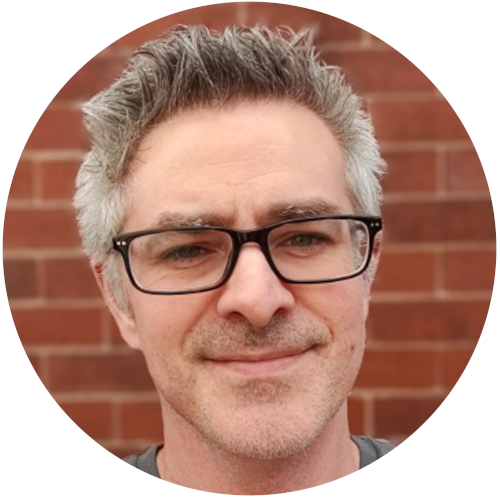
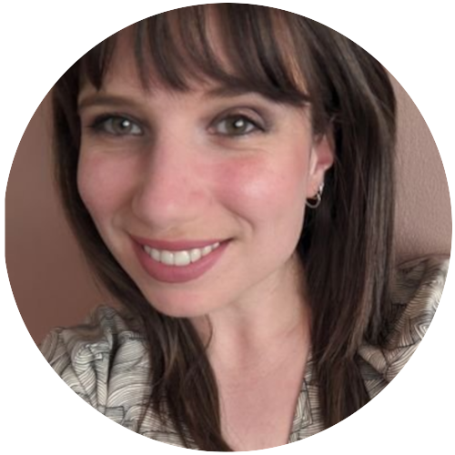
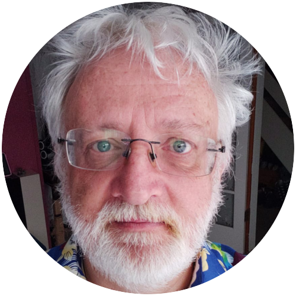
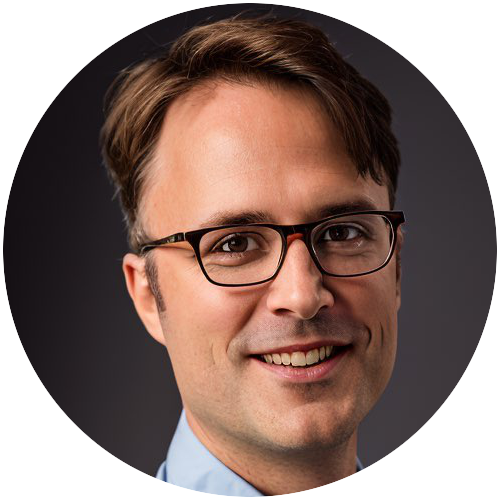
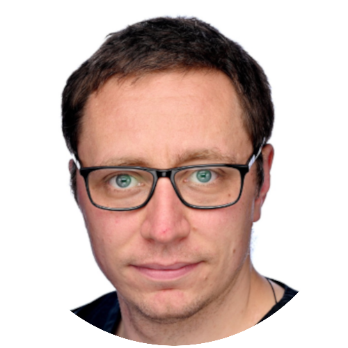
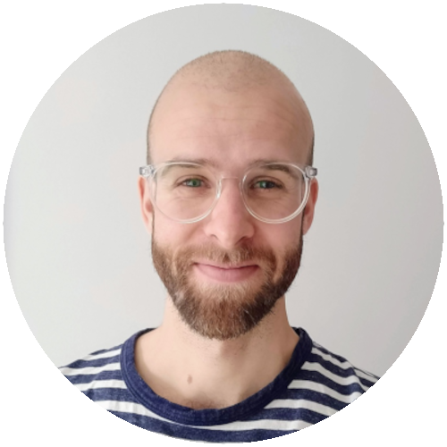
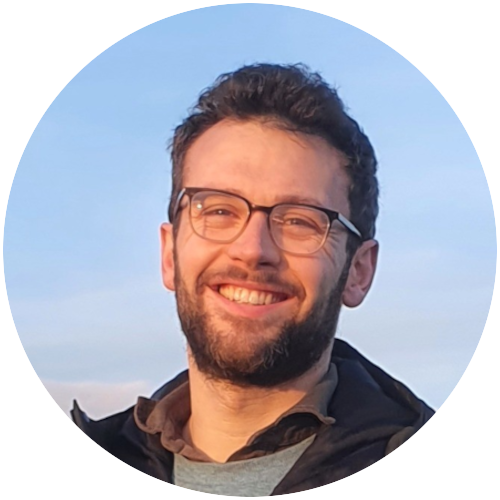

Bios 2024

Full name – Mark Bailey
Job title(s) – Locum Consultant in Respiratory Medicine and Clinician-who-codes, Conference Host
Short bio - Interested in all things digital and healthcare. His main passion is creating and implementing better digital systems to improve workloads and workflows of his fellow healthcare colleagues. His second passion is delivering digital healthcare education, and hence this conference. Mark is team lead for the Let’s Do Digital community.

Full name – Marcus Baw
Job title(s) – Practicing GP, softare developer, and clinical informatician, based in North Yorkshire, UK, and working exclusively on open source projects in healthcare.

Full name – Nick Bell
Job title(s) – Consultant Physician in General, Respiratory and Adult Cystic Fibrosis Medicine at the Bristol Royal Infirmary, Bristol.
Short bio - After a brief exploration of Physics and Philosophy at Oxford, Dr Bell trained at Bristol Medical School, intercalating in Physiology and graduating in 1998. Following House Jobs and SHO training in Bristol and Respiratory Medicine registrar training in the South West, he moved back to Edinburgh to work as a Research Fellow for the UK CF Gene Therapy Consortium at the University of Edinburgh, developing a particular interest in respiratory physiology, especially Multiple Breath Washouts in the assessment of lung disease.
He returned to Bristol to take up his current post as Consultant Physician in General, Respiratory and Adult Cystic Fibrosis Medicine at the Bristol Royal Infirmary in 2011. He has been clinical lead of the Bristol Adult CF Centre since 2016. Nick has a passion for data, health informatics and the use of technology to advance clinical care.

Full name – Nadia Kuftinoff
Job title(s) – Senior Digital Delivery Lead, BOB ICB
Short bio - Nadia oversees a portfolio of digital delivery projects in general practice ranging from operational to transformational. She has extensive experience of user-led innovation adoption and evaluation projects. She works closely with the frontline using her subject matter expertise to re-design service delivery and re-imagine what the role of a digital transformation lead looks like. She has an MSc in Digital Health Leadership from Imperial College London.

Full name – Simon Latimer
Job title(s) – Dermatology Systems Manager, UHSfT
Short bio - Ex Reuters, ex City IT consultant , ex games industry CTO and 17 years in NHS clinical informatics at University Hospitals Sussex. Still angry. Still passionate about getting it right.

Full name – Alexandre Mathy
Job title(s) – Consultant Neurologist at the Great Western Hospital, Oxford University Hospitals, and Lead Clinician for the Community Headache Clinic
Short bio - Alexandre has a BA in Computer Science from Cambridge University and a PhD in Neuroscience from UCL. He has worked on several software projects, including TenAlea, a platform for clinical trials management. His current focus is integrating Artificial Intelligence into clinical workflows.
Full name – Dionne Matthews
Job title(s) – Hospital Network Lead at LOGEX
Short bio - Dionne specialises in working across complex systems and learning through doing. She obtained her PhD in Cardiovascular health in 2013 and holds an MSc in Sport and Exercise Science, along with a Bachelor of Arts in Psychology and Kinesiology. Through work, Dionne focuses on scientific exchange through interactions with physicians, scientific organizations and internal stakeholders. She regularly facilitates collaborations between healthcare providers and industry partners to improve the use of data and tackle healthcare inequalities. Dionne works towards enabling benchmarking, collaboration, and simplifying the sharing of treatment insights across different healthcare systems to improve clinical outcomes and quality of life.
Dionne has worked in quality improvement implementation within the NHS since 2013 across several NHS Trusts and also has a passion for value based healthcare. Dionne has a post graduate certificate t in Higher Education and obtained a VBHC yellow belt in 2022. Dionne is as an advocate for community ownership to allow them to support and interact in regional healthcare provision. She is a quality improvement coach and mentor and is keen to explore how value based healthcare can support our health systems to improve patient care and experience.

Full name – Michal Pruski
Job title(s) – Senior Clinical Scientist University Hospital of Wales, Cardiff and Vale UHB
Short bio - After completing his basic science and bioethics training, and motivated by his experience in pre-hospital care, Michal completed the NHS Scientist Training Programme in Critical Care Science. Since becoming a Clinical Scientist, Michal has been working in an NHS research and evaluation centre, as well as developing his clinical skills in vascular ultrasound, both at the Cardiff and Vale University Health Board.
Michal is halfway through the Health Informatics Higher Specialist Scientist Training programme and is setting up a study looking at barriers and facilitators to the adoption of healthcare AI in Wales. He is passionate about bioethics and promoting the healthcare science workforce.

Full name – Stef Piatek
Job title(s) – Technical Programme Director, Clinical Research Informatics Unit, University College London Hospitals NHS Foundation Trust
Short bio - Stef leads on the technical delivery of projects within the Clinical Research Informatics Unit at University College London Hospital. After a PhD in functional genomics, he changed tact and focused on computation and software development while becoming a Clinical Scientist in Bioinformatics (genomics) at Great Ormond St Hospital. He’s since worked in research software engineering at University College London, specialising in healthcare projects.
Full name – Geoff Revill
Job title(s) – Managing Director, Safe Space One Ltd. Director of the South West Cyber Security Cluster
Short bio - Geoff has worked in software systems development for over 35 years. Ranging from deeply embedded systems in safety critical applications such as health, automotive and aerospace, through to a private-by-design social platform, whilst also spending nearly 10 years also working on very large scale systems of systems interoperability through semantic data. While in Silicon Valley he product led 300 software engineers developing next generation software development tools. He was responsible for a GNU C/C++ compiler Open Source contribution team, alongside competing commercial C/C++ compilers, and for adopting OS into large scale development tools architecture, and integrating with the company’s BSD 4.3 Unix OS code base, at the same time as supporting the organisation’s COTS Operating Systems and Middleware. This period was one when a whole market transitioned from commercial off-the-shelf operating systems to OS Linux. More recently Geoff has led two companies to receive UK Government Innovation awards, including his current company which is innovating a patient-centred managed self-care platform integral to the medical consultation process for any Long Term Care need.
No one can deny Open Source is not integral to any software today. I have seen many cycles of code licensing methods come and go for varying use cases. I will take a stance that Open Source is NOT (currently) an appropriate solution for end user application systems.

Full name – Tom Stocker
Job title(s) – Digital and innovation leader, The Clatterbridge Cancer Centre NHS Foundation Trust; Director, Care Cascades
Short bio - Tom works at Clatterbridge Cancer Centre delivering their digital strategy and EPR programme, and is working on a new venture aiming to generate financial returns to the NHS and NHS Staff from their innovations.
He has a background in NHS service design, and national technology programmes across Oxfordshire CCG, NHS England, NHSX, and the CQC – and is a lay member of the Chartered Institute of Ergonomics and Human Factors, Chartered Health information Management Executives, and the Royal College of Ophthalmologists.